Por dónde empezar
- Abrí la Guía de Confección y Ajuste: te explica cómo imprimir los moldes y cómo tomar las medidas.
- Elegí un molde de la colección y bajalo en A4 por partes (para imprimir en casa) o en Plotter (una hoja a tamaño real).
- Imprimí al 100 % («Tamaño real») y medí el cuadrado de control: tiene que dar 10 × 10 cm.
- Cortá tu primera toile de prueba antes de usar la tela definitiva.
Guías de confección
La orientación de costura, patronaje, ajuste y acabados, y los bonos I, II y III.
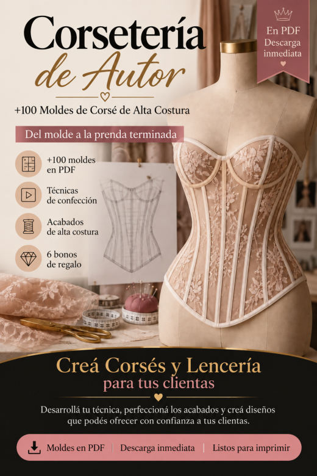
Guía de Confección y AjusteImprimir y armar los moldes, tomar medidas, adaptar el molde a otras medidas, la toile, costura de precisión, acabados y presentación de prendas a medida.
Abrir PDF- Guía para Trabajar el Tul Transparente
Estabilizar, cortar y coser el tul con menos estiramientos y más control.
Abrir PDF - Lista de Verificación de Acabados
Los detalles que suelen pasarse por alto, para revisar antes de fotografiar o entregar.
Abrir PDF 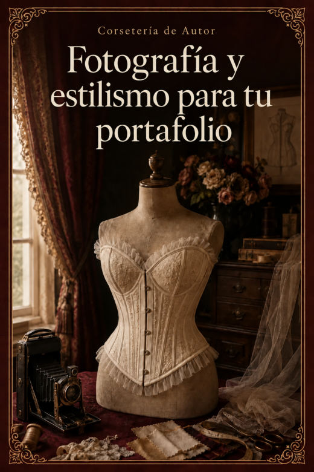
Fotografía y Estilismo para tu PortafolioLuz, fondo, las 8 fotos de cada pieza, estilismo y cómo armar tu portafolio con el celular.
Abrir PDF
No hay moldes con ese nombre. Probá con otra palabra.
Corsetería de Autor · 110 moldes de corsé
110 moldes en PDF · cada uno en A4 por partes y en plotter a tamaño real.
Cinturón corsé 8
 CORSÉ 001Cinturón Corsé · 4 Paneles · Borde Recto
CORSÉ 001Cinturón Corsé · 4 Paneles · Borde Recto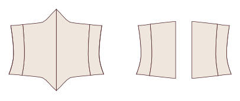
CORSÉ 002Cinturón Corsé · 4 Paneles · Borde en Punta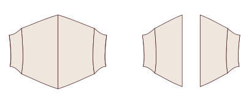
CORSÉ 003Cinturón Corsé · 4 Paneles · Borde Curvo CORSÉ 004Cinturón Corsé · 4 Paneles · Borde Asimétrico
CORSÉ 004Cinturón Corsé · 4 Paneles · Borde Asimétrico CORSÉ 005Cinturón Corsé · 5 Paneles · Borde Recto
CORSÉ 005Cinturón Corsé · 5 Paneles · Borde Recto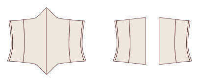
CORSÉ 006Cinturón Corsé · 5 Paneles · Borde en Punta CORSÉ 007Cinturón Corsé · 5 Paneles · Borde Curvo
CORSÉ 007Cinturón Corsé · 5 Paneles · Borde Curvo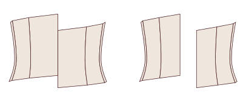
CORSÉ 008Cinturón Corsé · 5 Paneles · Borde Asimétrico
Cinturilla de talle 12
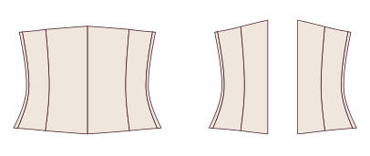
CORSÉ 009Cinturilla de Talle · 5 Paneles · Borde Recto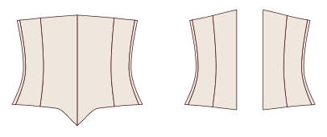
CORSÉ 010Cinturilla de Talle · 5 Paneles · Borde en Punta CORSÉ 011Cinturilla de Talle · 5 Paneles · Borde Curvo
CORSÉ 011Cinturilla de Talle · 5 Paneles · Borde Curvo CORSÉ 012Cinturilla de Talle · 5 Paneles · Borde con Cadera Larga
CORSÉ 012Cinturilla de Talle · 5 Paneles · Borde con Cadera Larga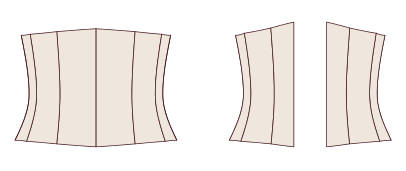
CORSÉ 013Cinturilla de Talle · 6 Paneles · Borde Recto CORSÉ 014Cinturilla de Talle · 6 Paneles · Borde en Punta
CORSÉ 014Cinturilla de Talle · 6 Paneles · Borde en Punta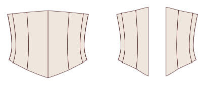
CORSÉ 015Cinturilla de Talle · 6 Paneles · Borde Curvo CORSÉ 016Cinturilla de Talle · 6 Paneles · Borde con Cadera Larga
CORSÉ 016Cinturilla de Talle · 6 Paneles · Borde con Cadera Larga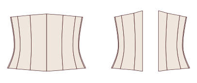
CORSÉ 017Cinturilla de Talle · 7 Paneles · Borde Recto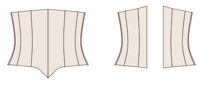
CORSÉ 018Cinturilla de Talle · 7 Paneles · Borde en Punta CORSÉ 019Cinturilla de Talle · 7 Paneles · Borde Curvo
CORSÉ 019Cinturilla de Talle · 7 Paneles · Borde Curvo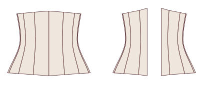
CORSÉ 020Cinturilla de Talle · 7 Paneles · Borde con Cadera Larga
Bajo busto clásico 16
 CORSÉ 021Bajo Busto Clásico · 5 Paneles · Borde Recto
CORSÉ 021Bajo Busto Clásico · 5 Paneles · Borde Recto CORSÉ 022Bajo Busto Clásico · 5 Paneles · Borde en Punta
CORSÉ 022Bajo Busto Clásico · 5 Paneles · Borde en Punta CORSÉ 023Bajo Busto Clásico · 5 Paneles · Borde Curvo sobre Cadera
CORSÉ 023Bajo Busto Clásico · 5 Paneles · Borde Curvo sobre Cadera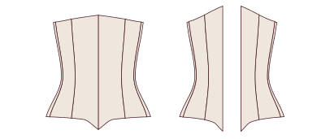
CORSÉ 024Bajo Busto Clásico · 5 Paneles · Borde en Punta Doble CORSÉ 025Bajo Busto Clásico · 6 Paneles · Borde Recto
CORSÉ 025Bajo Busto Clásico · 6 Paneles · Borde Recto CORSÉ 026Bajo Busto Clásico · 6 Paneles · Borde en Punta
CORSÉ 026Bajo Busto Clásico · 6 Paneles · Borde en Punta CORSÉ 027Bajo Busto Clásico · 6 Paneles · Borde Curvo sobre Cadera
CORSÉ 027Bajo Busto Clásico · 6 Paneles · Borde Curvo sobre Cadera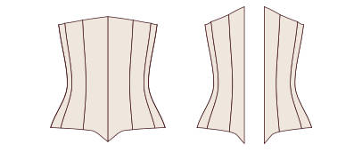
CORSÉ 028Bajo Busto Clásico · 6 Paneles · Borde en Punta Doble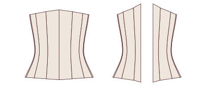
CORSÉ 029Bajo Busto Clásico · 7 Paneles · Borde Recto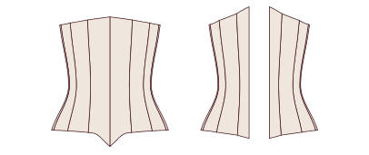
CORSÉ 030Bajo Busto Clásico · 7 Paneles · Borde en Punta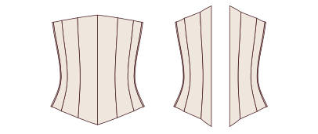
CORSÉ 031Bajo Busto Clásico · 7 Paneles · Borde Curvo sobre Cadera CORSÉ 032Bajo Busto Clásico · 7 Paneles · Borde en Punta Doble
CORSÉ 032Bajo Busto Clásico · 7 Paneles · Borde en Punta Doble CORSÉ 033Bajo Busto Clásico · 8 Paneles · Borde Recto
CORSÉ 033Bajo Busto Clásico · 8 Paneles · Borde Recto CORSÉ 034Bajo Busto Clásico · 8 Paneles · Borde en Punta
CORSÉ 034Bajo Busto Clásico · 8 Paneles · Borde en Punta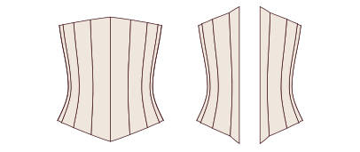
CORSÉ 035Bajo Busto Clásico · 8 Paneles · Borde Curvo sobre Cadera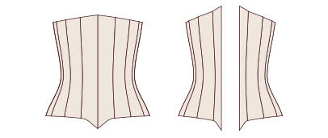
CORSÉ 036Bajo Busto Clásico · 8 Paneles · Borde en Punta Doble
Bajo busto victoriano 10
 CORSÉ 037Bajo Busto Victoriano · 6 Paneles · Reducción 6 cm
CORSÉ 037Bajo Busto Victoriano · 6 Paneles · Reducción 6 cm CORSÉ 038Bajo Busto Victoriano · 6 Paneles · Reducción 8 cm
CORSÉ 038Bajo Busto Victoriano · 6 Paneles · Reducción 8 cm CORSÉ 039Bajo Busto Victoriano · 7 Paneles · Reducción 6 cm
CORSÉ 039Bajo Busto Victoriano · 7 Paneles · Reducción 6 cm CORSÉ 040Bajo Busto Victoriano · 7 Paneles · Reducción 8 cm
CORSÉ 040Bajo Busto Victoriano · 7 Paneles · Reducción 8 cm CORSÉ 041Bajo Busto Victoriano · 8 Paneles · Reducción 6 cm
CORSÉ 041Bajo Busto Victoriano · 8 Paneles · Reducción 6 cm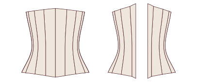
CORSÉ 042Bajo Busto Victoriano · 8 Paneles · Reducción 8 cm CORSÉ 043Bajo Busto Victoriano · 9 Paneles · Reducción 6 cm
CORSÉ 043Bajo Busto Victoriano · 9 Paneles · Reducción 6 cm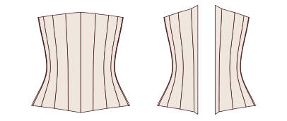
CORSÉ 044Bajo Busto Victoriano · 9 Paneles · Reducción 8 cm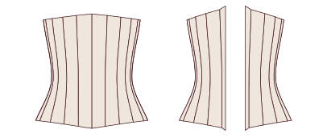
CORSÉ 045Bajo Busto Victoriano · 10 Paneles · Reducción 6 cm- CORSÉ 046Bajo Busto Victoriano · 10 Paneles · Reducción 8 cm
Bajo busto eduardiano 8
 CORSÉ 047Bajo Busto Eduardiano de Frente Recto · 6 Paneles · Borde Recto
CORSÉ 047Bajo Busto Eduardiano de Frente Recto · 6 Paneles · Borde Recto CORSÉ 048Bajo Busto Eduardiano de Frente Recto · 6 Paneles · Borde en Punta
CORSÉ 048Bajo Busto Eduardiano de Frente Recto · 6 Paneles · Borde en Punta CORSÉ 049Bajo Busto Eduardiano de Frente Recto · 7 Paneles · Borde Recto
CORSÉ 049Bajo Busto Eduardiano de Frente Recto · 7 Paneles · Borde Recto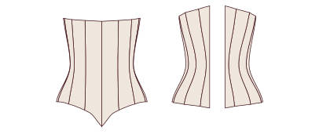
CORSÉ 050Bajo Busto Eduardiano de Frente Recto · 7 Paneles · Borde en Punta CORSÉ 051Bajo Busto Eduardiano de Frente Recto · 8 Paneles · Borde Recto
CORSÉ 051Bajo Busto Eduardiano de Frente Recto · 8 Paneles · Borde Recto CORSÉ 052Bajo Busto Eduardiano de Frente Recto · 8 Paneles · Borde en Punta
CORSÉ 052Bajo Busto Eduardiano de Frente Recto · 8 Paneles · Borde en Punta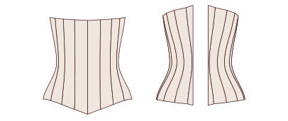
CORSÉ 053Bajo Busto Eduardiano de Frente Recto · 9 Paneles · Borde Recto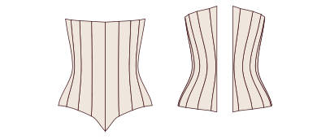
CORSÉ 054Bajo Busto Eduardiano de Frente Recto · 9 Paneles · Borde en Punta
Bajo busto largo 8
 CORSÉ 055Bajo Busto Largo hasta la Cadera · 6 Paneles · Busk
CORSÉ 055Bajo Busto Largo hasta la Cadera · 6 Paneles · Busk CORSÉ 056Bajo Busto Largo hasta la Cadera · 6 Paneles · Cordón Adelante
CORSÉ 056Bajo Busto Largo hasta la Cadera · 6 Paneles · Cordón Adelante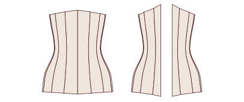
CORSÉ 057Bajo Busto Largo hasta la Cadera · 7 Paneles · Busk CORSÉ 058Bajo Busto Largo hasta la Cadera · 7 Paneles · Cordón Adelante
CORSÉ 058Bajo Busto Largo hasta la Cadera · 7 Paneles · Cordón Adelante CORSÉ 059Bajo Busto Largo hasta la Cadera · 8 Paneles · Busk
CORSÉ 059Bajo Busto Largo hasta la Cadera · 8 Paneles · Busk CORSÉ 060Bajo Busto Largo hasta la Cadera · 8 Paneles · Cordón Adelante
CORSÉ 060Bajo Busto Largo hasta la Cadera · 8 Paneles · Cordón Adelante CORSÉ 061Bajo Busto Largo hasta la Cadera · 9 Paneles · Busk
CORSÉ 061Bajo Busto Largo hasta la Cadera · 9 Paneles · Busk CORSÉ 062Bajo Busto Largo hasta la Cadera · 9 Paneles · Cordón Adelante
CORSÉ 062Bajo Busto Largo hasta la Cadera · 9 Paneles · Cordón Adelante
Sobre busto · escote recto 10
 CORSÉ 063Sobre Busto Escote Recto · 6 Paneles · Busk
CORSÉ 063Sobre Busto Escote Recto · 6 Paneles · Busk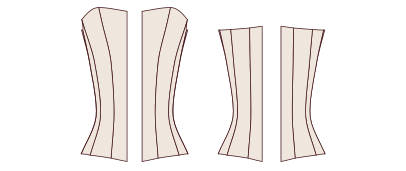
CORSÉ 064Sobre Busto Escote Recto · 6 Paneles · Cordón Adelante CORSÉ 065Sobre Busto Escote Recto · 7 Paneles · Busk
CORSÉ 065Sobre Busto Escote Recto · 7 Paneles · Busk- CORSÉ 066Sobre Busto Escote Recto · 7 Paneles · Cordón Adelante
 CORSÉ 067Sobre Busto Escote Recto · 8 Paneles · Busk
CORSÉ 067Sobre Busto Escote Recto · 8 Paneles · Busk- CORSÉ 068Sobre Busto Escote Recto · 8 Paneles · Cordón Adelante
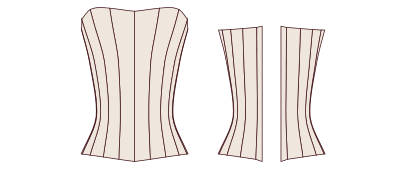
CORSÉ 069Sobre Busto Escote Recto · 9 Paneles · Busk CORSÉ 070Sobre Busto Escote Recto · 9 Paneles · Cordón Adelante
CORSÉ 070Sobre Busto Escote Recto · 9 Paneles · Cordón Adelante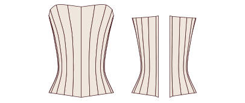
CORSÉ 071Sobre Busto Escote Recto · 10 Paneles · Busk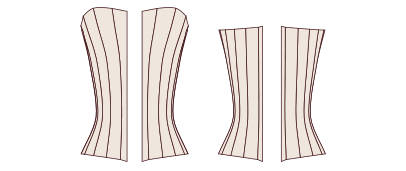
CORSÉ 072Sobre Busto Escote Recto · 10 Paneles · Cordón Adelante
Sobre busto · escote corazón 10
- CORSÉ 073Sobre Busto Escote Corazón · 6 Paneles · Borde Recto
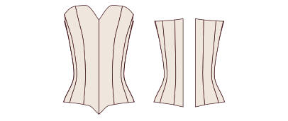
CORSÉ 074Sobre Busto Escote Corazón · 6 Paneles · Borde en Punta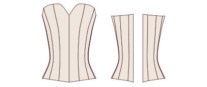
CORSÉ 075Sobre Busto Escote Corazón · 7 Paneles · Borde Recto CORSÉ 076Sobre Busto Escote Corazón · 7 Paneles · Borde en Punta
CORSÉ 076Sobre Busto Escote Corazón · 7 Paneles · Borde en Punta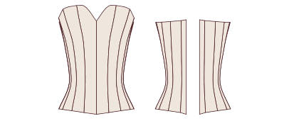
CORSÉ 077Sobre Busto Escote Corazón · 8 Paneles · Borde Recto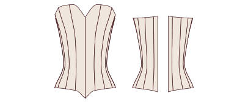
CORSÉ 078Sobre Busto Escote Corazón · 8 Paneles · Borde en Punta CORSÉ 079Sobre Busto Escote Corazón · 9 Paneles · Borde Recto
CORSÉ 079Sobre Busto Escote Corazón · 9 Paneles · Borde Recto CORSÉ 080Sobre Busto Escote Corazón · 9 Paneles · Borde en Punta
CORSÉ 080Sobre Busto Escote Corazón · 9 Paneles · Borde en Punta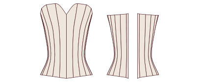
CORSÉ 081Sobre Busto Escote Corazón · 10 Paneles · Borde Recto CORSÉ 082Sobre Busto Escote Corazón · 10 Paneles · Borde en Punta
CORSÉ 082Sobre Busto Escote Corazón · 10 Paneles · Borde en Punta
Sobre busto · escote en V 8
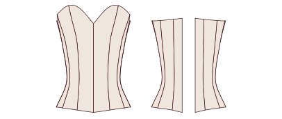
CORSÉ 083Sobre Busto Escote en V Suave · 6 Paneles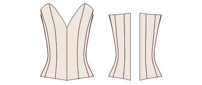
CORSÉ 084Sobre Busto Escote en V Profunda · 6 Paneles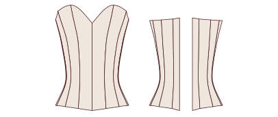
CORSÉ 085Sobre Busto Escote en V Suave · 7 Paneles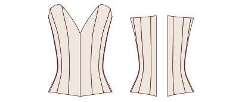
CORSÉ 086Sobre Busto Escote en V Profunda · 7 Paneles- CORSÉ 087Sobre Busto Escote en V Suave · 8 Paneles
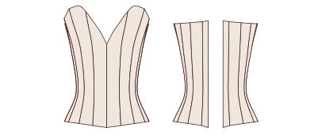
CORSÉ 088Sobre Busto Escote en V Profunda · 8 Paneles CORSÉ 089Sobre Busto Escote en V Suave · 9 Paneles
CORSÉ 089Sobre Busto Escote en V Suave · 9 Paneles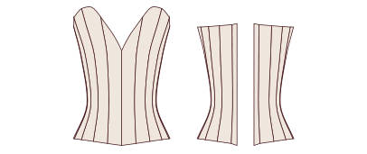
CORSÉ 090Sobre Busto Escote en V Profunda · 9 Paneles
Sobre busto · balconet 8
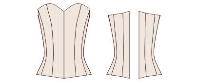
CORSÉ 091Sobre Busto Balconet · 6 Paneles · Borde Recto CORSÉ 092Sobre Busto Balconet · 6 Paneles · Borde en Punta
CORSÉ 092Sobre Busto Balconet · 6 Paneles · Borde en Punta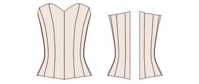
CORSÉ 093Sobre Busto Balconet · 7 Paneles · Borde Recto CORSÉ 094Sobre Busto Balconet · 7 Paneles · Borde en Punta
CORSÉ 094Sobre Busto Balconet · 7 Paneles · Borde en Punta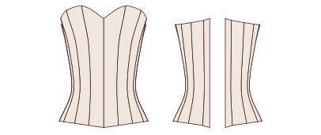
CORSÉ 095Sobre Busto Balconet · 8 Paneles · Borde Recto CORSÉ 096Sobre Busto Balconet · 8 Paneles · Borde en Punta
CORSÉ 096Sobre Busto Balconet · 8 Paneles · Borde en Punta CORSÉ 097Sobre Busto Balconet · 9 Paneles · Borde Recto
CORSÉ 097Sobre Busto Balconet · 9 Paneles · Borde Recto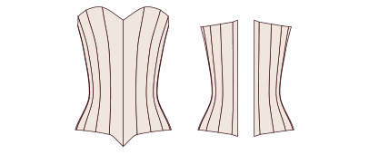
CORSÉ 098Sobre Busto Balconet · 9 Paneles · Borde en Punta
Corselete con breteles 6
 CORSÉ 099Corselete con Breteles Finos · 6 Paneles
CORSÉ 099Corselete con Breteles Finos · 6 Paneles CORSÉ 100Corselete con Breteles Anchos · 6 Paneles
CORSÉ 100Corselete con Breteles Anchos · 6 Paneles CORSÉ 101Corselete con Breteles Finos · 7 Paneles
CORSÉ 101Corselete con Breteles Finos · 7 Paneles- CORSÉ 102Corselete con Breteles Anchos · 7 Paneles
 CORSÉ 103Corselete con Breteles Finos · 8 Paneles
CORSÉ 103Corselete con Breteles Finos · 8 Paneles- CORSÉ 104Corselete con Breteles Anchos · 8 Paneles
Cordón adelante y atrás 6
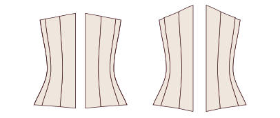
CORSÉ 105Bajo Busto con Cordón Adelante y Atrás · 6 Paneles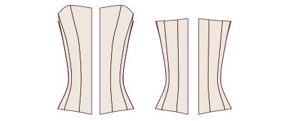
CORSÉ 106Sobre Busto con Cordón Adelante y Atrás · 6 Paneles CORSÉ 107Bajo Busto con Cordón Adelante y Atrás · 7 Paneles
CORSÉ 107Bajo Busto con Cordón Adelante y Atrás · 7 Paneles CORSÉ 108Sobre Busto con Cordón Adelante y Atrás · 7 Paneles
CORSÉ 108Sobre Busto con Cordón Adelante y Atrás · 7 Paneles CORSÉ 109Bajo Busto con Cordón Adelante y Atrás · 8 Paneles
CORSÉ 109Bajo Busto con Cordón Adelante y Atrás · 8 Paneles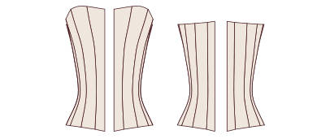
CORSÉ 110Sobre Busto con Cordón Adelante y Atrás · 8 Paneles
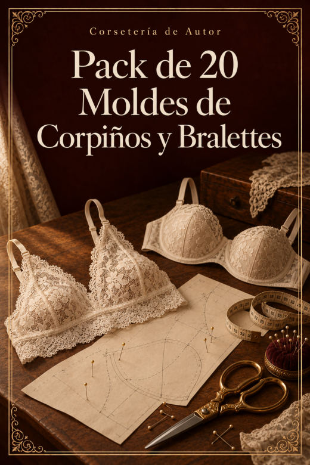
Bono IV · Pack de 20 Moldes de Corpiños y Bralettes
20 moldes en PDF · cada uno en A4 por partes y en plotter a tamaño real.
Triángulo 6
 CORPIÑO 001Bralette Triángulo Clásico
CORPIÑO 001Bralette Triángulo Clásico CORPIÑO 002Bralette Triángulo con Banda Ancha
CORPIÑO 002Bralette Triángulo con Banda Ancha CORPIÑO 003Bralette Triángulo con Espalda Cruzada
CORPIÑO 003Bralette Triángulo con Espalda Cruzada CORPIÑO 004Bralette Triángulo con Breteles Dobles
CORPIÑO 004Bralette Triángulo con Breteles Dobles CORPIÑO 005Bralette Triángulo de Encaje con Festón
CORPIÑO 005Bralette Triángulo de Encaje con Festón CORPIÑO 006Bralette Cortina con Lazo
CORPIÑO 006Bralette Cortina con Lazo
Halter 2
 CORPIÑO 007Bralette Halter Atado al Cuello
CORPIÑO 007Bralette Halter Atado al Cuello CORPIÑO 008Bralette Halter con Banda
CORPIÑO 008Bralette Halter con Banda
Escote en V y cruzados 2
 CORPIÑO 009Bralette Escote en V Profundo
CORPIÑO 009Bralette Escote en V Profundo CORPIÑO 010Bralette Cruzado Adelante
CORPIÑO 010Bralette Cruzado Adelante
Longline 2
- CORPIÑO 011Bralette Longline Recto
 CORPIÑO 012Bralette Longline en V
CORPIÑO 012Bralette Longline en V
Bandeau 2
- CORPIÑO 013Bandeau Liso
 CORPIÑO 014Bandeau con Frunce Central
CORPIÑO 014Bandeau con Frunce Central
Con copa armada 4
 CORPIÑO 015Corpiño Balconet sin Aro (Copa de 3 Piezas)
CORPIÑO 015Corpiño Balconet sin Aro (Copa de 3 Piezas) CORPIÑO 016Corpiño de Copa con Costura Vertical sin Aro
CORPIÑO 016Corpiño de Copa con Costura Vertical sin Aro CORPIÑO 017Corpiño de Copa Entera sin Aro
CORPIÑO 017Corpiño de Copa Entera sin Aro CORPIÑO 018Corpiño de Encaje con Copa en 2 Piezas
CORPIÑO 018Corpiño de Encaje con Copa en 2 Piezas
Deportivos 2
 CORPIÑO 019Corpiño Deportivo Espalda Nadadora
CORPIÑO 019Corpiño Deportivo Espalda Nadadora CORPIÑO 020Corpiño Deportivo Espalda Cruzada
CORPIÑO 020Corpiño Deportivo Espalda Cruzada
Bono V · Pack de 20 Moldes de Bodys
20 moldes en PDF · cada uno en A4 por partes y en plotter a tamaño real.
Bodys 20
 BODY 001Body Escote Redondo · Espalda Cerrada
BODY 001Body Escote Redondo · Espalda Cerrada BODY 002Body Escote Redondo · Espalda Cavada
BODY 002Body Escote Redondo · Espalda Cavada- BODY 003Body Escote Redondo · Espalda Cruzada
 BODY 004Body Escote Redondo · Espalda Abierta en Gota
BODY 004Body Escote Redondo · Espalda Abierta en Gota BODY 005Body Escote en V · Espalda Cerrada
BODY 005Body Escote en V · Espalda Cerrada BODY 006Body Escote en V · Espalda Cavada
BODY 006Body Escote en V · Espalda Cavada BODY 007Body Escote en V · Espalda Cruzada
BODY 007Body Escote en V · Espalda Cruzada BODY 008Body Escote en V · Espalda Abierta en Gota
BODY 008Body Escote en V · Espalda Abierta en Gota BODY 009Body Escote Cuadrado · Espalda Cerrada
BODY 009Body Escote Cuadrado · Espalda Cerrada- BODY 010Body Escote Cuadrado · Espalda Cavada
 BODY 011Body Escote Cuadrado · Espalda Cruzada
BODY 011Body Escote Cuadrado · Espalda Cruzada BODY 012Body Escote Cuadrado · Espalda Abierta en Gota
BODY 012Body Escote Cuadrado · Espalda Abierta en Gota BODY 013Body Escote Corazón · Espalda Cerrada
BODY 013Body Escote Corazón · Espalda Cerrada BODY 014Body Escote Corazón · Espalda Cavada
BODY 014Body Escote Corazón · Espalda Cavada BODY 015Body Escote Corazón · Espalda Cruzada
BODY 015Body Escote Corazón · Espalda Cruzada BODY 016Body Escote Corazón · Espalda Abierta en Gota
BODY 016Body Escote Corazón · Espalda Abierta en Gota BODY 017Body Escote Halter · Espalda Cerrada
BODY 017Body Escote Halter · Espalda Cerrada- BODY 018Body Escote Halter · Espalda Cavada
 BODY 019Body Escote Halter · Espalda Cruzada
BODY 019Body Escote Halter · Espalda Cruzada BODY 020Body Escote Halter · Espalda Abierta en Gota
BODY 020Body Escote Halter · Espalda Abierta en Gota
Bono VI · Pack de 20 Moldes de Bombachas: Colaless, Tangas, Vedetinas y Culotte
20 moldes en PDF · cada uno en A4 por partes y en plotter a tamaño real.
Colaless 5
 BOMBACHA 001Colaless Clásica
BOMBACHA 001Colaless Clásica BOMBACHA 002Colaless de Tiro Alto
BOMBACHA 002Colaless de Tiro Alto- BOMBACHA 003Colaless con Tiras Laterales
 BOMBACHA 004Colaless de Encaje con Frente Doble
BOMBACHA 004Colaless de Encaje con Frente Doble- BOMBACHA 005Colaless Brasilera en V
Tangas 5
 BOMBACHA 006Tanga Clásica de Tiro Bajo
BOMBACHA 006Tanga Clásica de Tiro Bajo BOMBACHA 007Tanga de Tiro Medio
BOMBACHA 007Tanga de Tiro Medio- BOMBACHA 008Tanga con Laterales Anchos
- BOMBACHA 009Tanga Brasilera Cavada
- BOMBACHA 010Tanga con Tiras Dobles
Vedetinas 5
 BOMBACHA 011Vedetina Clásica
BOMBACHA 011Vedetina Clásica BOMBACHA 012Vedetina de Tiro Alto
BOMBACHA 012Vedetina de Tiro Alto- BOMBACHA 013Vedetina Cavada
 BOMBACHA 014Vedetina con Laterales de Encaje
BOMBACHA 014Vedetina con Laterales de Encaje BOMBACHA 015Vedetina Retro de Cintura Alta
BOMBACHA 015Vedetina Retro de Cintura Alta
Culotte 5
 BOMBACHA 016Culotte Clásico
BOMBACHA 016Culotte Clásico BOMBACHA 017Culotte de Tiro Alto
BOMBACHA 017Culotte de Tiro Alto BOMBACHA 018Culotte con Pierna Recta
BOMBACHA 018Culotte con Pierna Recta BOMBACHA 019Culotte de Encaje con Festón
BOMBACHA 019Culotte de Encaje con Festón BOMBACHA 020Culotte Short
BOMBACHA 020Culotte Short
Próximo paso
Guardá esta página en favoritos: es tu acceso de por vida a la colección. Elegí tu primer molde, imprimilo y empezá por la toile.